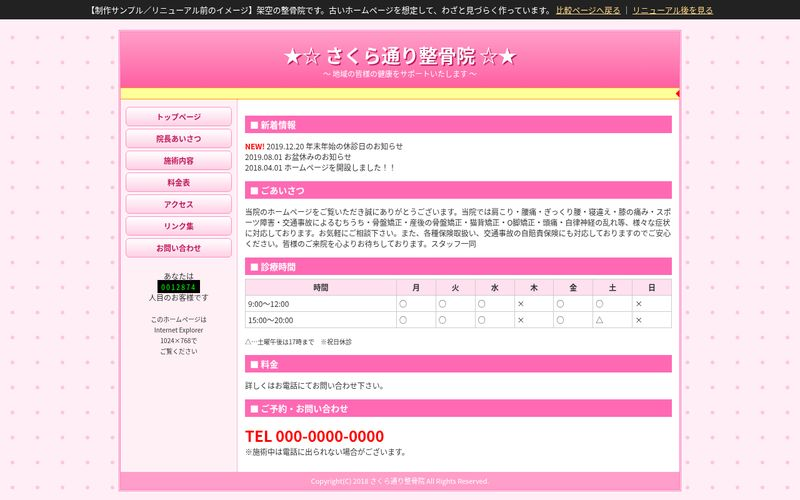
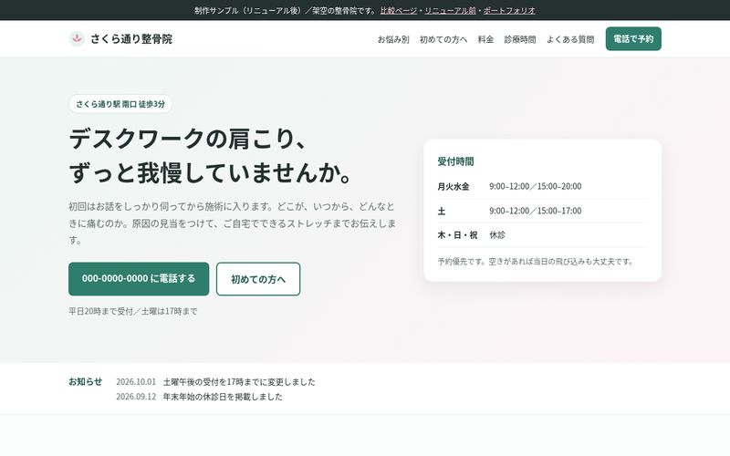
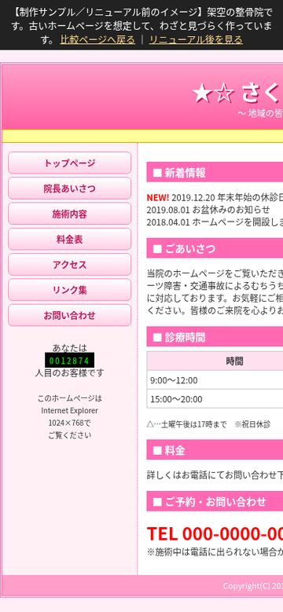
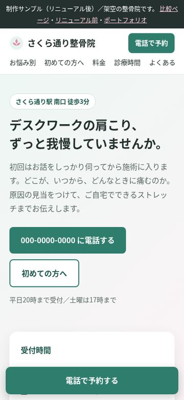

ホームページリニューアル（サンプル）
さくら通り整骨院 ビフォー・アフター
「2018年ごろに作ったまま更新が止まっている、小さな院のホームページ」を想定して、リニューアル前と後の両方を作りました。どちらも実在しない架空の医院です。
パソコンで見たとき


スマホで見たとき


どこを変えたか
| 項目 | リニューアル前 | リニューアル後 |
|---|---|---|
| スマホ対応 | パソコン用の固定幅（900px）。スマホでは拡大しないと読めない | 画面幅に合わせて組み替わるレスポンシブ対応。電話ボタンを画面下に固定 |
| 最初に伝えること | 「ようこそ！！」と流れる文字。何の院か、どこにあるかが分かりにくい | よくある悩み・駅からの距離・受付時間を最初の画面にまとめた |
| 料金 | 「お電話にてお問い合わせ下さい」のみ | メニューごとの料金と時間の目安を表で掲載 |
| 文章 | 症状名を並べた長い一文 | 症状ごとに短く分け、初めての方向けに来院の流れを追加 |
| お知らせ | 2019年で更新が止まっている | 日付つきで2件だけ表示。古い情報が目立たない構成 |
| 読みやすさ | 文字12px、表組みでレイアウト、点滅する「NEW!」 | 本文16px、見出し構造・表の見出しセルを整理、点滅をやめて動きを控えめに |
| 表示速度 | — | 画像はSVGとCSSのみ、外部フォントや重いスクリプトなし |
実際のご依頼では、今のサイトの文章や写真をできるだけ活かしながら進めます。WordPressのサイトなら、テーマの修正やブロックエディタでの作り直しにも対応します。